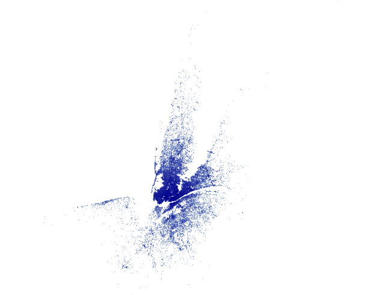

Easily and rapidly generate raster data in R, even for larger volumes of data, with an aesthetics-based mapping syntax that should be familiar to users of the ggplot2 package.
While rasterly does not attempt to reproduce the full functionality of the Datashader graphics pipeline system for Python, the rasterly API has several core elements in common with that software package. Combined with Plotly.js and the plotly package, rasterly enables analysts to generate interactive figures which are responsive enough to embed into web applications.
Documentation: https://z267xu.github.io/rasterly/
Importing datasets for use with rasterly
There are several ways to import large datasets into R for use with rasterly; one option is the data.table package (https://cran.r-project.org/web/packages/data.table/vignettes/datatable-intro.html).
- csv file:
library(data.table)
data <- data.table::fread("yourpath/somefile.csv") # or a link- parquet file: Apache Parquet is a column-oriented, open-source format which offers efficient data compression. There are a few options in R for importing Parquet data. One of these is the
arrowpackage, now available on CRAN.
The package must build Apache Arrow first, so it may take a few minutes to install the first time around.
library(arrow)
parquet_data <- read_parquet("somefile.parquet")
# returns a data.frame if sparklyr is not loaded, otherwise it will be a tibble
# to obtain an ordinary data.frame, some slight postprocessing may be required
# parquet_data <- base::as.data.frame(parquet_data)- fst file: The fst package is an excellent option for extremely fast serialization of large data frames in R. In addition to rapid compression using LZ4 and ZSTD, it provides support for multithreading to parallelize operations.
library(fst)
fst_data <- read.fst("somefile.fst")Installing the package
The rasterly package is now available from CRAN, and the most recent release will always be available on GitHub. To install the CRAN package:
install.packages("rasterly")To install the current version available via GitHub instead:
remotes::install_github("plotly/rasterly")
Visualizing data with rasterly
rasterly is inspired by the datashader package available for Python. Both provide the capability to generate raster data for rapid rendering of graphics for even very large datasets.
In terms of performance, datashader is faster but rasterly is comparable. rasterly aims to provide a user-friendly interface to generate raster data for use with the plotly package; it cannot be used for plotting or rendering figures on its own.
Producing an interactive graph with the plotly package
To illustrate the basic functionality provided by the package, we’ll start by retrieving data on Uber trips taken in New York City from April 1st until September 30th of 2014. The dataset includes 4,533,327 observations.
# Load New York Uber data
ridesRaw_1 <- "https://raw.githubusercontent.com/plotly/datasets/master/uber-rides-data1.csv" %>%
data.table::fread(stringsAsFactors = FALSE)
ridesRaw_2 <- "https://raw.githubusercontent.com/plotly/datasets/master/uber-rides-data2.csv" %>%
data.table::fread(stringsAsFactors = FALSE)
ridesRaw_3 <- "https://raw.githubusercontent.com/plotly/datasets/master/uber-rides-data3.csv" %>%
data.table::fread(stringsAsFactors = FALSE)
ridesDf <- list(ridesRaw_1, ridesRaw_2, ridesRaw_3) %>%
data.table::rbindlist()Now that the data are loaded, we can pass them to plot_ly and pipe the output into add_rasterly:
plot_ly(ridesDf, x = ~Lat, y = ~Lon) %>%
add_rasterly_heatmap()
General usage
Pass the data into rasterly:
ridesDf %>%
rasterly(mapping = aes(x = Lat, y = Lon)) %>%
rasterly_points() -> p
p
# or use simplied `rplot`
with(ridesDf,
rplot(x = Lat, y = Lon)
)
Note that, p is a list of environments. The display info can be accessed through
r <- rasterly_build(p)
str(r)“r” contains image raster and other useful info (like numeric aggregation matrices) required to produce the image but it does not provide any graphs.
Example use in interactive web applications
The Uber NYC Rasterizer application in our Dash Gallery provides a simple live demo of the rasterly package in action. Check it out here!

A second Dash for R application to visualize (a much larger) dataset from the US Census Bureau is also available.